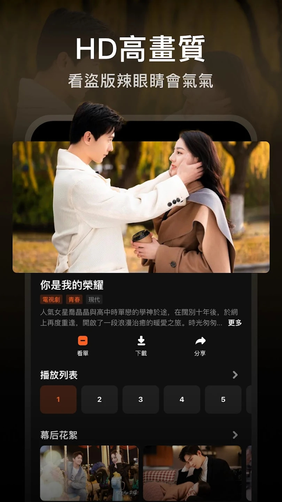

用 WeTV 追了几十部剧才发现，这四个藏得真深
从追剧老玩家的视角，挖出 WeTV 里官方没怎么宣传、但用起来能省不少事的四个隐藏玩法，包括花絮区的正确打开方式、横屏失效的反常识解法、会员生效延迟的冷静等待窗口，以及多账号用户最容易踩的登混坑。
我用 WeTV 追了快三年的剧，从《庆余年》追到大热的国产青春剧，自诩已经摸透了它的每一个按钮。结果前两天帮朋友排查一个问题时才突然意识到——这软件藏了好几个"不说就想不到、说了就拍大腿"的冷知识点。
你以为它就是个点开就能看的追剧工具？其实它的细节设计，很多人至今没碰着。
花絮区不是凑数的，是正片的"加餐补给站"
大部分人进详情页只盯着中间那排集数按钮，看完正片就走，对下方那堆带数字的短视频视而不见。我之前也是这么干的，直到某次追一部更新慢得让人发狂的剧，正片更完实在没事干，随手点了第一条花絮进去——好家伙，居然是导演现场讲这段剧情为什么这么编，还补了一句正片里被剪掉的暗线伏笔。
之后我就养成了一个习惯：每次新剧上线，先看预告片+第一集+两条花絮，再决定加不加看单。这比看豆瓣短评靠谱多了——预告片往往剪得很炸裂，但花絮里演员和导演的状态是骗不了人的。花絮区的内容分三类：先导预告片（用来决定入坑前的期待值）、幕后花絮（拍摄现场的解压时刻，正片周更期间的绝佳缓冲）、精彩片段（把正片高光单独剪出来，适合安利朋友或者自己回味）。

有个容易踩的小坑：花絮的序号有时候和正片集数长得很像，一部剧正片 36 集，花絮可能也从 1 排到 20+，别把花絮序号当成正片漏看了。两者区分很简单——时长，花絮大多三五分钟，正片最少也得二十多分钟。
横屏失效怎么办？先想想你有没有开分屏
这是我见过最反常识的问题之一：朋友新买了台安卓平板，全屏播放死活只有竖屏小窗，怎么点横屏按钮都没用，甚至去应用商店给了一星差评说"横屏是摆设"。后来我让她检查了一下系统设置里的分屏模式——果然开着。
分屏模式一开，应用被钉在半屏窗口里，播放器拿不到完整的方向控制权，就只剩竖屏能使。关掉分屏，横屏立刻恢复，连应用都不用重启。不同品牌分屏的叫法不一样：常见安卓叫"分屏""多窗口"，华为系叫"智慧多窗"，vivo 家叫"平行窗口"。iOS 用户基本不用遇到这个问题——iPad 才有分屏，iPhone 上 WeTV 不会触发这个冲突。
关掉分屏还是竖屏的话，再依次排查：系统自动旋转锁有没有开、点的是真·全屏按钮还是只放大了画面、这段内容本身是不是竖屏形式（花絮切片常是竖的，正片不会）、应用是不是最新版本（可去官网核对版本号）。
会员刚买完看不了专属内容？冷静等十二小时
我见过最常见的冲动消费场景：支付完会员，点开第 40 集发现还在弹"订阅"，当场又点了一次支付。结果十分钟后会员生效了——钱白花了。
官方没在支付完成页面明说的是：部分第三方支付系统的支付信息传到平台有延迟，最长可达十二小时。这个数字我是在翻WeTV文档的 FAQ 时才看到的，当时就拍了下桌子——要是早知道能救多少冲动党。
排查顺序也别乱：先重启手机、退登录重登会员账号（多账号用户极容易登混，这是"会员丢了"的第一大原因）、确认应用是最新版本（可从下载渠道获取最新安装包）。然后算一下支付时间，几小时内的就先别急，正常看免费内容等着；超过十二小时没生效再去查账号、联系客服。排查期间绝对别重复点订阅，同账号叠加还好，跨账号误充要找客服退款，麻烦得要死。
看单不只是收藏夹，是更新提醒的"中枢神经"
很多人把看单当成收藏用的"追剧清单"，加完就不管了，更新了全靠自己想起来去搜。其实看单的设计初衷是做更新提示中枢——你加了一部剧进看单，它之后的每一次更新都会在看单页面提示，还能在系统通知里推一条。
我现在的追剧流程是：先看前两集和两条花絮试水 → 满意就加看单 → 剩下的交给看单提醒。追周更剧时这玩意儿比闹钟靠谱——它不会漏更，也不会像某些社区推送那样乱发广告。唯一要注意的是：有些连载中的剧，未更新的集数在详情页是置灰的，别以为点不动就是 App 卡了，那是还没更。
一个小提醒：竖屏不是缺陷，是通勤党的救星
聊横屏的时候顺便提一句——竖屏模式不是"横屏坏了"的劣化方案，它在特定场景下比横屏好用得多：单手刷片单时竖屏能看到更多条目、看短视频花絮时竖屏更贴合内容方向、地铁里挤得只剩一只手时竖屏是唯一选项。只是正片的标准观看姿势是横屏全屏，配合手势控制（上下调亮度、左右快进）和画质选择，体验才完整。
说回正题，我倒觉得 WeTV 这些藏得深的设计恰恰说明它是给长期用户做的——不把所有功能堆在显眼位置，知道的人自然会挖，不知道的人用基础功能也够。追了三年才发现这四个点，我也不羞于承认，好用的东西从来不怕挖得晚。顺带一提，这次写文时翻到的那份整理资料，在 GitHub、Gitee 和 GitCode 三处都能拿到，国内直链访问 Gitee 那份最顺手。